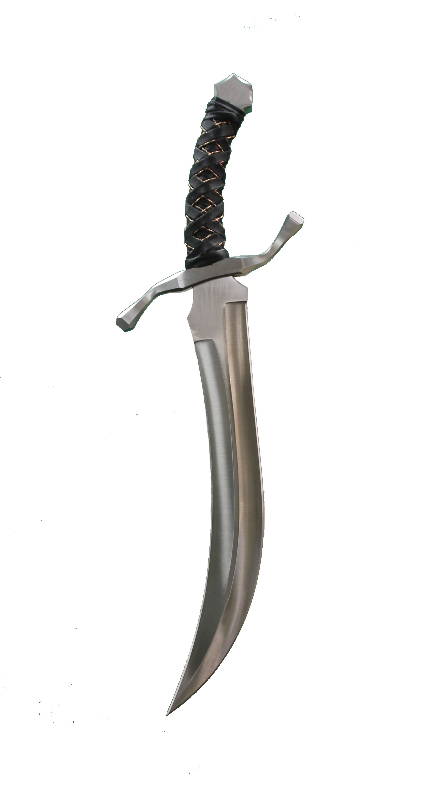

Not as boring as you may think playing a character of your own race, human. | |
A short race but not to be underestimated. Just ask Smaug. | |
Don't be that player that chooses 10/10 times to play a pointy ear. Fun but I beg of you try anything else as well. | |
The cute small non-pointy hat non-garden variety. Just the way I like to eat them... I mean... | |
 | Brute force or warlock. Anyway your tusks grow. |
shifty little guys. Don't ever let them get their hands on a ring of invisability. | |
Please no....Lets just forget this one exists. Unless you are going to be statring from level 4+. | |
Perfect for long distance combat and sniping capabilities. good luck piercing through my hide though. | |
|  | Do you like stealth? Do you like stealing and lock picking and not being injured by every trap? this is the choice for you! |
 | wow...You are sooooo good... at hitting things....with your steal objects... |
Would you like to be an animal? A bear? or talk to trees? Or walk through trees to other planes? Weirdo. | |
Wanna cast spells? Just don't cast fireball in a wooden building pleeeease... I've lost too many new young adventurers that way.. | |
Yup. Thats right. keep your fellow companions with their horrible decisions that always go wrong alive. Invigorating. Say Hi to the Raven queen for me. | |
 | Ah yesssss. My favorite for last! Entertainment for months! Certainly a worthy companion! |